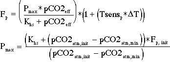
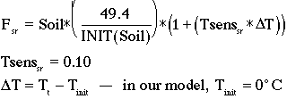
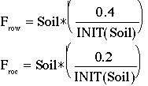

The accumulated results indicate that our function for photosynthesis should satisfy the following characteristics:
1) the global flow should be 100 Gt C/yr (one gigaton of carbon per year; 1Gt = 1015g)2) the rate should increase at higher atmospheric CO2 level, but there should be a saturation point, where additional increases in atmospheric CO2 yield no further increase in the rate of photosynthesis
3) the rate should increase with increasing temperature.
There are several ways to construct an equation that incorporates this information, but here, we use the following:
Fp is the global rate of photosynthetic uptake of CO2 in GtC/yr.
Pmax is a parameter with units of GtC/yr that is used to force the equation for Fp to give the proper value corresponding to the starting conditions of the model.
Khs = 62.5 ppm -- the half-saturation value -- the atmospheric CO2 concentration at which the rate of photosynthesis, Fp, is half of the ultimate saturation value, given that particular temperature
pCO2atm,init = 280 ppm -- the pre-industrial atmospheric CO2 concentration
pCO2atm,min = 30 ppm -- value below which no photosynthesis can occur
pCO2eff = pCO2atm - pCO2atm,min-- the effective atmospheric CO2 concentration
Fp,init = 100 GtC/yr -- the initial value for global photosynthesis
Tsensp = 0.04 -- establishes the increase of Fp per degree of warming
DT = T - Tinit -- temp. difference relative to initial temp., Tinit is set to 0
For the purposes of our model, we will formulate plant respiration in the following manner:
Fpr = Fp * (50/100)where Fpr is the rate of global plant respiration in Gt C/yr and Fp is the rate of global photosynthesis by land plants.
Litter FallDead plant material enters the soil in two ways -- it falls on the surface as litter, and it is contributed below the surface from roots.
Flf = land_biota * (50/INIT(land_biota)where Flf is the flow in Gt C/yr and land_biota is the amount of carbon stored in the land biota (plants) at any given time.
Soil RespirationRespiration also occurs within the soil, as microorganisms consume the dead plant material.
The temperature sensitivity part of the equation is a linear function like that used in defining photosynthesis. The formulation here gives an increase in soil respiration by a factor of 2.0 if the temperature increases 10°C.
Runoff where Frow and Froc are the runoff flows to the warm ocean and the cold ocean respectively.
Fatm-oc = koa * (pCO2atm - pCO2oc) * Aocwhere Aoc is the surface area of the ocean and the pCO2 values for the atmosphere and ocean are expressed in units of ppm. The flow units are grams of carbon per year, which can then be converted to Gigatons of carbon per year, using the relationship that 1Gt = 1 x 10